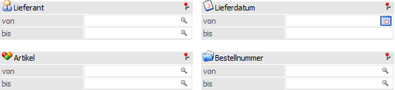
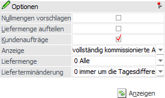
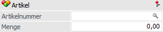
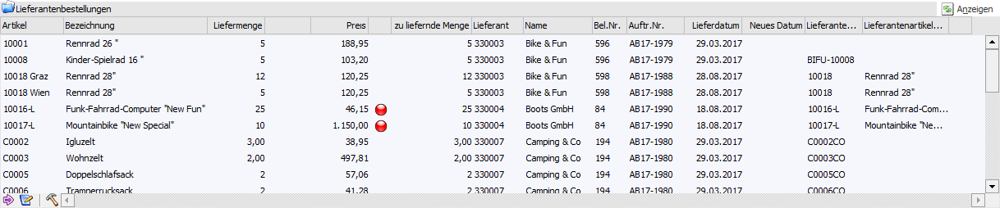
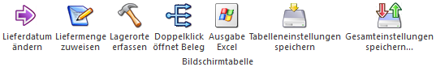
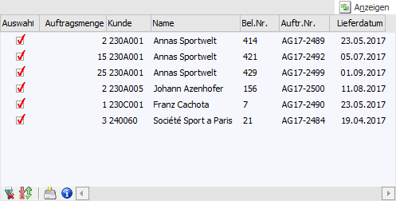
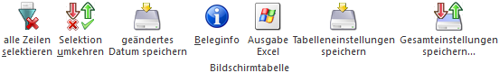

In dem Bereich "Lieferantenlieferung bearbeiten" können die zu bearbeitenden Lieferantenbestellungen (d.h. deren Belegzeilen) selektiert und bearbeitet werden.

Selektion

Ø Lieferant von / bis
An dieser Stelle kann eine Einschränkung auf einen bestimmten Lieferantenbereich erfolgen.
Ø Lieferdatum von / bis
Hier kann auf das Lieferdatum (Belegzeile) der Lieferantenbestellung eingeschränkt werden.
Ø Artikel von / bis
Mit Hilfe dieser Felder kann eine Einschränkung auf einen bestimmten Artikelbereich vorgenommen werden.
Hinweis
Neben der Artikelnummer des Artikelstamms kann die Selektion auch auf die Lieferantenartikelnummern aus der Bestellung erfolgen.
Ø Artikelnummer / Menge
Durch Aktivierung der Option "Liefermenge aufteilen" stehen anstelle der Eingabefelder "Artikel von / bis" die Felder "Artikelnummer" und "Menge" zur Verfügung. Hierüber kann schnell und effizient die Liefermenge mit der Bestellmenge abgeglichen und gespeichert werden (nähere Informationen entnehmen Sie bitte der Option "Liefermenge aufteilen").
Ø Bestellnummer von / bis
An dieser Stelle kann eine Einschränkung auf die Lieferantenbestellung erfolgen.
Optionen

Alle im Bereich "Optionen" hinterlegten Einstellungen werden benutzerspezifisch gespeichert.
Ø Nullmengen vorschlagen
Ist diese Option aktiviert, so werden beim Füllen der Tabelle (durch Drücken des Buttons "Anzeigen") die Liefermengen auf 0 gesetzt.
Hinweis
Dieses gilt auch für bereits gespeicherte Liefermengen. D.h. ein erneutes Speichern mit Liefermenge 0 würde die zuvor gespeicherte Menge zurücksetzten.
Ø Liefermenge aufteilen
Wird diese Option aktiviert, so kann anstelle der Einschränkung "Artikel von / bis" nur eine Artikelnummer und deren Liefermenge eingegeben werden.

Beim Druck des Buttons "Anzeigen" wird die Tabelle "Lieferantenbestellungen" mit allen zur eingegebenen Artikelnummer zugehörigen Bestellzeilen gefüllt und die Menge kann auf die einzelnen Zeilen manuell aufgeteilt werden. Bei Anwahl des Buttons "Ok" bzw. der Taste F5 wird dann geprüft, ob die auf die Bestellungen aufgeteilte Menge der vorgegebenen Liefermenge entspricht. Wurde diese überschritten oder noch nicht erreicht, so wird eine Warnung ausgegeben und die Speicherung abgebrochen. Wurde die Menge hingegen korrekt aufgeteilt, so werden die Mengen gespeichert und der Inhalt der Tabelle gelöscht. Es erfolgt hierbei kein automatischer Wechsel in den Bereich "Lieferantenlieferscheine drucken".
Ø Kundenaufträge anzeigen
Mit dieser Option kann eine weitere Tabelle eingeblendet werden, in welcher der Kundenauftrag bzw. die Kundenaufträge des ausgewählten Artikels angezeigt werden.
Hinweis
Durch Aktivierung werden die Option "Anzeige", "Liefermenge" und "Lieferterminänderung" freigeschaltet. Zusätzlich ist die Option "Kundenaufträge anzeigen" die Grundvoraussetzung zur Nutzung der Tabellenbuttons "Lieferdatum ändern" und "Liefermenge zuweisen".
Ø Anzeige
Wenn die Option "Kundenaufträge anzeigen" aktiviert wurde, so steht die Einstellung "Anzeigen" zur Verfügung. Mit Hilfe einer Mehrfachauswahlliste kann - aufgrund des Kommissionierungsstatus - definiert werden, ob teilweise, vollständig oder nicht kommissionierte Aufträge innerhalb der Tabelle "Kundenaufträge" angezeigt werden sollen.
Hinweis
Bei teilweise kommissionierten Aufträgen handelt es sich um Teilliefermengen, die nur teilweise kommissioniert wurden. Bei vollständig kommissionierten Aufträgen handelt es sich um Liefermengen (bzw. auch Teilliefermengen!), bei denen die Menge vollständig kommissioniert wurde.
Ø Liefermenge
Wenn die Option "Kundenaufträge anzeigen" aktiviert wurde, so steht die Einstellung "Liefermenge" zur Verfügung. Mit Hilfe einer Auswahlliste kann - aufgrund der gespeicherten Liefermenge - gesteuert werden, welche Kundenaufträge in Tabelle "Kundenaufträge" herangezogen werden:
ü 0 - Alle
Mit der Option "0 -
Alle" werden alle Aufträge des ausgewählten Artikels angezeigt.
ü 1 - Nur teilweise lieferbare
Aufträge anzeigen
Mit dieser Option werden alle Aufträge angezeigt, bei denen
nicht die gesamte offene Menge bereits als Liefermenge festgelegt wurde.
Ø Lieferterminänderung
Wenn die Option "Kundenaufträge anzeigen" aktiviert wurde, so steht die Einstellung "Lieferterminänderung" zur Verfügung. Mit Hilfe einer Auswahlliste kann definiert werden, wie sich eine Lieferterminänderung auf die gewählten Aufträge auswirken soll. Es stehen die folgenden Varianten zur Verfügung:
ü 0 - um die Tagesdifferenz erhöhen
Beispiel - Tagesdifferenz
Kundenauftrag 1 - Lieferdatum
17.11.2021
Kundenauftrag 2 - Lieferdatum 16.11.2021
Lieferantenlieferdatum -
15.11.2021 wird verschoben auf den 17.11.2021; daraus ergibt sich eine Differenz
von 2 Tagen.
D.h.
Kundenauftrag 1 - neues Lieferdatum
19.11.2021
Kundenauftrag 2 - neues Lieferdatum 18.11.2021
ü 1 - nächstmögliches Lieferdatum errechnen
Beispiel - nächstmögliches Lieferdatum
Kundenauftrag 1 - Lieferdatum
24.06.2021
Lieferdatum des Lieferanten 27.06.2021 wird verschoben auf
29.06.2021
Kundenauftrag 1 - neues Lieferdatum
29.06.2021
Kundenauftrag 2 - Lieferdatum 27.06.2021
Lieferdatum des
Lieferanten 24.06.2021 wird verschoben auf 29.06.2021
Kundenauftrag 1 - neues
Lieferdatum 29.06.2021
Kundenauftrag 3 - Lieferdatum
27.06.2021
Lieferdatum des Lieferanten 24.06.2021 wird verschoben auf
26.06.2021
Kundenauftrag 3- Lieferdatum wird nicht geändert
Ø Anzeigen
Mit Hilfe des Buttons "Anzeigen" wird die Tabelle "Lieferantenbestellungen" gemäß der aktuellen Selektion gefüllt.
Tabelle "Lieferantenbestellungen"

Durch Ausführung der Anzeige wird die Tabelle gemäß der zuvor getroffenen Selektion gefüllt. Die Bestellzeilen werden hierbei nach Lieferant, Artikelnummer und Datum sortiert. Die Sortierung kann durch einen Mausklick auf die Spaltenüberschrift geändert werden.
Hinweis
Durch einen Doppelklick mit der Maus in eine Bestellzeile, wird das Belegerfassen geöffnet und die Lieferantenbestellung in der Stufe "7 - L.Lieferschein" geladen. Nach dem Bearbeiten (z.B. Hinzufügen neuer Artikel) und Speichern oder Drucken des Beleges wird die Tabelle "Lieferantenbestellungen" aktualisiert.
Achtung
Handelt es sich um Bestellungen, die in der Stufe "Lieferschein" den Druckstatus S (Sammellieferscheine) eingetragen haben, so können diese im Belegerfassen nur gespeichert, nicht aber gerechnet oder gedruckt werden.
Ø Artikel / Bezeichnung
In diesen Spalten werden die Artikelnummer und die Bezeichnung aus der Lieferantenbestellung angezeigt.
Ø Liefermenge / Liefermenge 2
In diesen Feldern wird die Liefermenge erfasst. Vorgeschlagen wird entweder die zuletzt gespeicherte Menge, die noch offene Restmenge oder 0 (bei Aktivierung der Option "Nullmengen vorschlagen").
Ø Preis
An dieser Stelle wird der Einzelpreis des Artikels gemäß Bestellung angezeigt und kann editiert werden. Sollte der Preis angepasst werden, so wird diese Eingabe bei Anwahl des Buttons "Ok" bzw. der Tate F5 in die Lieferantenbestellung retour geschrieben.
Ø Lagerort
In der Spalte "Lagerort" wird über den Status der Lagerorterfassung Auskunft gegeben:
ü  - Rot
- Rot
Die angelieferte Menge wurde bisher
nicht auf Lagerorte aufgeteilt.
ü  - Orange
- Orange
Ein Teil der angelieferten Menge
wurde nicht auf Lagerorte aufgeteilt.
ü  - Grün
- Grün
Die angelieferte Menge wurde auf
Lagerorte aufgeteilt.
ü  - Dunkelgrün
- Dunkelgrün
Es wurde auf einen Lagerort
mehr aufgeteilt, wie angeliefert wird. Wenn die Aufteilung in solch einem Fall
über mehrere Orte stattgefunden hat, dann wird eine orange Kugel angezeigt.
Hinweis
Per Doppelklick auf das Kugel-Symbol kann das Fenster "Lagerorte erfassen" geöffnet werden.
Ø zu liefernde Menge
Hier wird die noch zu liefernde Restmenge angezeigt.
Ø Lieferant / Name / Bel.Nr. / Auftr.Nr. / Lieferdatum
In diesen Spalten werden der Lieferant mit Name und die Laufnummer des Belegs mit Belegnummer angezeigt.
Ø Lieferdatum
An dieser Stelle wird das Lieferdatum der Belegzeile gemäß Lieferantenbestellung angezeigt.
Ø Neues Datum
Sollte ein neues Lieferdatum bekannt sein, so kann dieses hier erfasst werden. Die Speicherung in der Lieferantenbestellung und den Kundenaufträgen erfolgt durch Anwahl des Tabellenbuttons "Lieferdatum ändern", was wiederum bedeutet, dass die Tabelle "Kundenaufträge" aktiviert sein muss.
Ø Lieferantenartikelnummer / Lieferantenartikelbezeichnung
In diesen Spalten wird die Lieferantenartikelnummer und -bezeichnung des Artikels aus der Lieferantenbestellung angezeigt.
Ø Hauptartikel / Verweis
Handelt es sich bei der Bestellzeile um einen Hauptartikel mit Ausprägungen oder um die Ausprägung direkt, so werden in dieser Spalte je nach Status folgende Informationen in Form eines Symbols ausgegeben:
ü  - Hauptartikel mit Ausprägungen
- Hauptartikel mit Ausprägungen
Es
handelt sich um einen nicht vollständig ausgeprägten Hauptartikel bzw.
Ausprägungsartikel. Die weitere Aufteilung auf die Ausprägungen kann per
Doppelklick auf die Bestellzeile innerhalb des Lieferantenlieferscheins oder in
dem Fenster "Ausprägungen erfassen" erfolgen (Details siehe Tabellenbutton
"Doppelklick öffnet Beleg").
ü - Umbuchungsaufforderung
Handelt es
sich um Bestellungen mit verknüpften Verweisartikeln (Umbuchungsanforderung), so
wird dieses Symbol angezeigt. Zusätzlich kann über das Kontextmenü (rechte
Maustaste in der Bestellzeile) die Artikelbedarfsvorschau geöffnet werden, in
welcher der Verweisartikel mit der Umbuchungsanforderung angezeigt wird.
Ø Colli
In dieser Spalte wird der Colli der Belegzeile angezeigt.
Tabellenbuttons

Ø Lieferdatum ändern
Der Button "Lieferdatum ändern" steht nur zur Verfügung, wenn die Tabelle "Kundenaufträge" aktiviert wurden (siehe Option "Kundenaufträge anzeigen"). Durch Anwahl des Buttons wird das neue Lieferdatum, welches in der Spalte "Neues Datum" erfasst wurde, nach einer Sicherheitsabfrage in der Lieferantenbestellung abgespeichert. Zusätzlich wird das Datum gemäß der Option "Lieferterminänderung" an die ausgewählten Aufträge der Tabelle "Kundenaufträge" übergeben und ebenfalls in den Belegzeilen gespeichert.
Hinweis
Die über diesen Weg geänderten Kundenaufträge erhalten intern das Kennzeichen "geändert", wodurch diese über den Belegdruck (Belegstufe "Auftrag", Optionen "nur Belege mit Status gerechnet" und "nur veränderte Belege drucken") direkt nochmals gedruckt werden können.
Ø Liefermenge zuweisen
Der Button "Liefermenge zuweisen" steht nur zur Verfügung, wenn die Tabelle "Kundenaufträge" aktiviert wurden (siehe Option "Kundenaufträge anzeigen") und in dieser die optionale Spalte "Liefermenge" sichtbar ist. Durch Anwahl des Buttons wird die Liefermenge der Lieferantenbestellung auf die ausgewählten Kundenaufträge (siehe Spalte "Auswahl") aufgeteilt. Wenn die Liefermenge nicht für alle ausgewählten Kundenaufträge ausreicht, so wird eine entsprechende Meldung ausgegeben.
Wenn die Lieferantenbestellung anschließend als Lieferschein gedruckt wird, so wird in den zugewiesenen Kundenaufträgen die Liefermenge festgeschrieben und das Packlistenflag gesetzt. Gleichzeitig wird auch eine Batchnummer im Belegkopf vergeben (ähnlich wie im Batchbeleg), auf welche beim Belegdruck gefiltert werden kann. Somit können Kundenaufträge ohne weitere Schritte als nächstes in der Kommissionierung bearbeitet werden.
Hinweis
Diese Funktionalität wird nicht unterstützt, wenn Lieferantensammellieferscheine gedruckt werden.
Ø Lagerorte erfassen
Durch Anwahl des Buttons "Lagerorte erfassen" wird das Fenster "Lagerorte erfassen" geöffnet.
Ø Doppelklick öffnet Beleg
Handelt es sich um einen nicht ausgeprägten Hauptartikel, so kann die weitere Aufteilung auf die Ausprägungen per Doppelklick auf die Bestellzeile erfolgen. Wenn der Button "Doppelklick öffnet Beleg" deaktiviert ist (Standardeinstellung), so wird hierfür das Fenster "Ausprägungen erfassen" geöffnet, ansonsten wird der Beleg im "Belege erfassen" angezeigt.
Hinweis
Handelt es sich nicht um einen unausgeprägten Hauptartikel, so wird immer die Belegerfassung geöffnet. Des Weiteren wird die Einstellung des Buttons benutzerspezifisch gespeichert.
Ø Ausgabe Excel
Durch Anwahl des Buttons "Ausgabe Excel" wird der Inhalt der Tabelle an Microsoft Excel übergeben.
Ø Tabelleneinstellungen speichern
Die Spalten einer Tabelle können grundsätzlich an beliebige Positionen verschoben, bzw. in der Breite entsprechend angepasst werden. Durch Anwahl des Buttons "Tabelleneinstellungen speichern" werden die Einstellungen benutzerspezifisch gespeichert und bei dem nächsten Aufruf des Programmpunktes wieder vorgeschlagen.
Ø Gesamteinstellungen speichern
Im Gegensatz zu "Tabelleneinstellungen speichern" können mit "Gesamteinstellungen speichern" mehrere Tabellenaufbauten gespeichert und nach Wunsch geladen werden. Zusätzlich werden Sonderfunktionen der Tabelle (z.B. "Spalte gruppieren") ebenfalls bei der Speicherung bedacht.
Tabelle "Kundenaufträge"

Wurde die Option "Kundenaufträge anzeigen" aktiviert, so wird die Tabelle "Kundenaufträge" dargestellt, in welche der Kundenauftrag bzw. die Kundenaufträge des ausgewählten Artikels angezeigt werden. Neben den Standard-Spalten können über das Kontextmenü der rechten Maustaste (Funktion "Spalten anzeigen / verstecken") jederzeit optionale Spalten hinzugefügt bzw. entfernt werden.
Ø Auswahl
Mit Hilfe dieser Option kann definiert werden, welche Kundenaufträge bei dem Ändern des Lieferdatums bzw. der Liefermengenzuweisung berücksichtigt werden sollen.
Ø Auftragsmenge
An dieser Stelle wird die Auftragsmenge aus dem Kundenauftrag angezeigt.
Ø Kunde / Name / Bel.Nr. / Auftr.Nr.
In diesen Spalten werden der Kunde mit Name und die Laufnummer des Belegs mit Belegnummer angezeigt.
Ø Lieferdatum
An dieser Stelle wird das Lieferdatum des Artikels gemäß Kundenauftrag angezeigt und kann editiert werden. Findet eine manuelle Änderung statt, so kann diese mit Hilfe des Tabellenbuttons "geändertes Datum speichern" in die Belegzeile des Kundenauftrags zurückgeschrieben werden.
Ø Liefermenge (optionale Spalte)
In dieser Spalte wird die zugewiesene Liefermenge (siehe Tabellenbutton "Liefermenge zuweisen") angezeigt und kann editiert werden.
Ø komm. Menge (optionale Spalte)
An dieser Stelle wird die bereits kommissionierte Menge angezeigt.
Tabellenbuttons

Ø alle Zeilen selektieren
Mit Hilfe dieses Buttons werden alle Kundenaufträge selektiert.
Ø Selektion umkehren
Bei Anwahl des Buttons werden die selektierten Datensätze deselektiert und umgekehrt.
Ø geändertes Datum speichern
Wurde in der optional einblendbaren Spalte "Lieferdatum" eine manuelle Änderung vorgenommen, so kann dieses neue Datum, durch Anwahl des Buttons "geändertes Datum speichern", in die Belegzeile des Kundenauftrags übergeben / gespeichert werden.
Ø Beleginfo
Mit diesem Button kann der selektierte Kundenauftrag am Bildschirm angezeigt werden.
Ø Ausgabe Excel
Durch Anwahl des Buttons "Ausgabe Excel" wird der Inhalt der Tabelle an Microsoft Excel übergeben.
Ø Tabelleneinstellungen speichern
Die Spalten einer Tabelle können grundsätzlich an beliebige Positionen verschoben, bzw. in der Breite entsprechend angepasst werden. Durch Anwahl des Buttons "Tabelleneinstellungen speichern" werden die Einstellungen benutzerspezifisch gespeichert und bei dem nächsten Aufruf des Programmpunktes wieder vorgeschlagen.
Ø Gesamteinstellungen speichern
Im Gegensatz zu "Tabelleneinstellungen speichern" können mit "Gesamteinstellungen speichern" mehrere Tabellenaufbauten gespeichert und nach Wunsch geladen werden. Zusätzlich werden Sonderfunktionen der Tabelle (z.B. "Spalte gruppieren") ebenfalls bei der Speicherung bedacht.